Вітальня · журнал «ДентАрт» 2021 №1
Професор Наталія Біденко: «Стоматологія так само безмежна, як і світ»

Сьогодні гостя дентартівської Вітальні – Наталія Василівна Біденко, декан стоматологічного факультету Національного медичного університету імені О. О. Богомольця, професор кафедри дитячої терапевтичної стоматології та профілактики стоматологічних захворювань цього факультету, доктор медичних наук. Сподіваємося, розмова з цією креативною, діяльною, мудрою жінкою увіллє і у ваші душі, шановні читачі, дещицю оптимізму і прагнення нести добро у світ…
«Треба оцінювати профпридатність абітурієнтів спеціальними тестами»
– Шановна Наталіє Василівно, Ви як декан стоматологічного факультету починаєте співпрацювати зі студентами ще на етапі вступної кампанії – як з абітурієнтами. І дуже важливим на цьому етапі є те, наскільки осмислений вибір майбутнього стоматолога. А як Ви стали стоматологом, чому обрали цю професію? І як Ви тепер працюєте з абітурієнтами?
– Не буду запевняти, що все життя мріяла стати стоматологом – це не так. Мені завжди подобалися природничі дисципліни, біологія, у дитинстві я відвідувала гурток цього напрямку в Київському палаці піонерів. Добре давалися мені і фізика та математика, але природничі науки приваблювали все-таки більше.
Водночас мені дуже подобалося робити щось своїми руками, майструвати. Мій дідусь по лінії батька Дмитро Леонтійович столярував, виготовляв різні вироби з дерева, і я завжди допомагала йому, мене це приваблювало. Так само батько Василь Дмитрович часто щось вигадував і майстрував, хоча працював інженером, здобув вищу освіту.
У моїй родині лікарів не було, всі були технарі, інженери. Але якось моя стоматолог, дуже мудра жінка, що лікувала нашу родину, сказала: «Ти подумай: тобі подобається біологія, ти вмієш робити багато що своїми руками, то чи не хотіла б ти піти у стоматологію?»
І вона повела мене у стоматологічний корпус Київського медичного інституту. Я походила, подивилася, уявила себе студенткою в цих стінах, і це мені здалося гарною перспективою. Жодного разу я не пошкодувала, що отак ніби несподівано обрала тоді свій шлях.
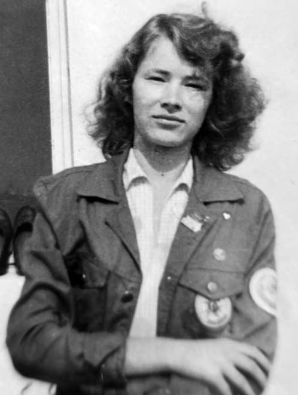
Щодо сучасних абітурієнтів, то, на мою думку, система прийому в медичні університети у нас ще не зовсім досконала. Недостатньо результатів ЗНО, високих балів, рейтингу. Молода людина має свідомо обрати нашу нелегку професію і мати до неї певний хист. Краще це розуміють ті юнаки й дівчата, що приходять в університети після медичних чи зуботехнічних училищ, вони більш мотивовані. Хоча вони теж стикаються з труднощами, бо не опанували основ методології навчання – в училищах дещо спрощують, «прагматизують» цей процес.
Треба було б оцінювати профпридатність абітурієнтів, як це роблять, наприклад, в Австрії, де запроваджені різнопланові вступні іспити, свого роду тестування на придатність до медичної роботи.
А поки що буває і таке, що студент-першокурсник, котрий непогано навчається, приходить до мене, кладе заяву на стіл і каже: «Я хочу відрахуватися». Ясна річ, я завжди намагаюся зрозуміти, що спонукало студента до такого кроку: можливо, щось не виходить з навчанням, чи важкий період у житті, якісь проблеми, переживання. Але дехто каже: «Я зрозумів, що це не моє. Коли ми почали ходити на анатомію, гістологію, усвідомив, що не зможу присвятити цьому життя».
Я поважаю цих юнаків і дівчат та їхніх батьків, які їх розуміють і підтримують на крутому життєвому повороті, але краще було б зробити той поворот до того, як вступати в медичний університет, пройшовши, можливо, через психологічні тести, тести на медичну профпридатність. Тож над цією проблемою варто серйозно попрацювати.
З абітурієнтами, звичайно, ми контактуємо, я працюю у приймальній комісії і спілкуюся з тими, хто обрав стоматологію. Вони різні. Серед них є такі жорсткі прагматики, котрі обрали стоматологію тому, що хочуть заробляти великі гроші. Є ті, чий вибір зумовлений родинною традицією. Але більшість – юнаки й дівчата, що дуже туманно уявляють своє майбутнє. Тому прагну з ними поговорити, дещо пояснити, головне – як їм поринути у процес навчання, щоб не отримати шок на початку, коли зададуть вивчити 50 сторінок підручника з анатомії з незрозумілими латинськими назвами, а усвідомити, що це все – опанування того фундаментального рівня, на якому і вибудуються твої знання і вміння як професіонала.
Якщо трапляється нагода, ми запрошуємо на зустрічі зі студентами наших випускників, що працюють або навчаються в інших країнах, і вони, виходячи з власного досвіду навчання і в нашому університеті, і за кордоном, дають поради, на що слід звернути увагу.
Ми іноді робимо анкетування випускників при врученні дипломів, запитуючи: «Що б Ви порадили собі самому, якби Ви тільки вступали в університет?» Одержували різні відповіді: і «Вчи як слід анатомію», і «Йди працювати з третього курсу», і «Не отримуй «нб» і зайвий раз не потрапляй у деканат», і «Будь завжди на позитиві»… Зачитували ці відповіді першокурсникам, бо такі неформальні речі дають можливість студентам усвідомити, навіщо вчитися, як учитися, щоб стати успішним стоматологом.
– А який вплив має тут батьківський фактор? У нас є когорта стоматологів, котрі в суспільстві на видноті, і батьки думають, що, закінчивши стоматологічний факультет, їхні діти автоматично стануть такими, як Ярослав Заблоцький, Мирон Угрин, їх усі поважатимуть, вони будуть їздити на крутих автомобілях, відтак деякі батьки просто змушують своїх нащадків іти на стоматологію. Ви з цим стикаєтеся?
– Батьківський чинник може бути дуже різний. Навіть якщо батьки – стоматологи, то дитина не завжди створена для стоматології. Батьки і діти сприймають це по-різному. Дехто справді намагається примусити сина чи доньку до того, що не є їхнім шляхом у житті. У нас один із третьокурсників на іспиті з патофізіології, не знаючи відповіді на питання, написав вірша у стилі японського хайку. Талановитий юнак, а вчитися у медичному для нього мука. Може, з нього б вийшов чудовий філолог, письменник…
Є діти, які виросли в стоматологічному середовищі і свої зусилля свідомо спрямовують на те, щоб бути гідними і своїх батьків, і шляхетної місії збереження здоров'я людей. Це чудовий варіант. Діти, до речі, відчувають, чи батьки працюють стоматологами лише для заробляння грошей, чи справді сповна віддаються тій справі, яку люблять. Ми все це намагаємось враховувати. Коли студент просить його відрахувати чи, навпаки, мати просить поновити її сина, який залишив був навчання, намагаємося глибоко з'ясувати ситуацію.
Бувало, до речі, що відраховані студенти приходили і дякували. Одна дівчина, відрахована за неуспішність на третьому курсі, наприклад, розповіла таке: «Ви знаєте, я так переживала і плакала, коли мене відрахували, але у мене з'явився час, я вивчила німецьку мову, мене взяли на роботу в один україно-німецький благодійний фонд, я побувала у Німеччині, тепер працюю з дітьми-інвалідами, і це справа, яка мені подобається. Дякую вам».
Часом, хоча й рідко, батьки, які знають, що у сина чи доньки проблеми з навчанням, приходять і запитують, чи не вважаємо ми, що їхня дитина помилилася, обрала не свій шлях. Робота декана в тому й полягає, щоб ці речі бачити і вчасно допомагати, навіть розлучаючи з факультетом чи, навпаки, повертаючи до нього.
«Створюємо на факультеті таку атмосферу, щоб здобуття знань і навичок було і легшим, і оптимальнішим»
– Останнім часом по всій Україні шириться інформація, як на вашому факультеті модернізували навчальний процес. Поділіться досвідом…
– Справді, ми створюємо на факультеті таку атмосферу, щоб здобуття знань і навичок було і легшим, і оптимальнішим. Ми розробили, затвердили на нашій вченій раді і ввели у навчальний процес Облікові книжки практичних навичок роботи на фантомах і у клініці. Зараз трохи карантин заважає використовувати ці книжки так активно, як було до пандемії, але їх запровадження стало цікавою справою і для студентів, і для викладачів, і для мене як декана. Бо ми реально можемо оцінити, чим студент устиг оволодіти, що не зробив, чому не зробив – чи не було бажання у нього самого, чи не було пацієнтів, обговорити такі питання при потребі з кафедрами…
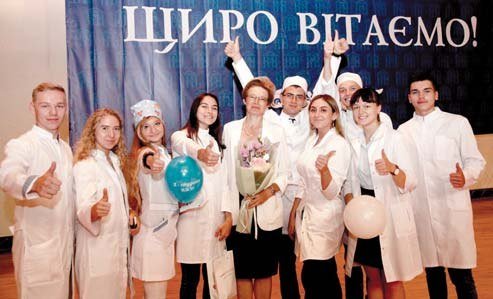
В Обліковій книжці фіксуються ті навички, які прописані в нашому освітньому стандарті, і коли студент прийняв пацієнта, зробив ті чи інші маніпуляції, викладач це засвідчує своїм підписом. У багатьох зарубіжних медичних освітніх закладах такі звіти вимагають. Наші студенти, котрі продовжують навчання за кордоном, іноді пишуть, що потрібна довідка, скільки вони поставили пломб, скільки зробили анестезій, інших маніпуляцій. Облікова книжка це фіксує, і які б студент не отримував оцінки в журнал, ми можемо бачити також, якими профілактичними та лікувальними процедурами він оволодів практично і бути впевненими у його готовності до роботи за фахом. Факультет має унікальну клінічну базу – Стоматологічний медичний центр НМУ імені О. О. Богомольця, умови якого забезпечують можливість студентів працювати з пацієнтами різного профілю.
Окрім того, ми підготували збірники алгоритмів виконання практичних навичок, уже два видання випустили. Офіційно вони призначені для п'ятого курсу, для підготовки до випускних іспитів, але будь-який лікар і студент може цим збірником скористатися. Друге видання ілюстроване, можна подивитися всі етапи основних маніпуляцій. Там немає більш теоретичних питань діагностики і патогенезу, з ними у студентів краще, після навчання в університеті вони можуть описати дуже складні захворювання і їх патогенез, але дехто не може правильно відпрепарувати каріозну порожнину 2-го класу і провести якісне ендодонтичне лікування. Не можна допускати перекосу або в теорію, або в практику, баланс має підтримуватися.
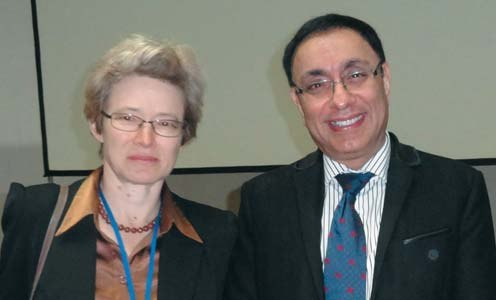
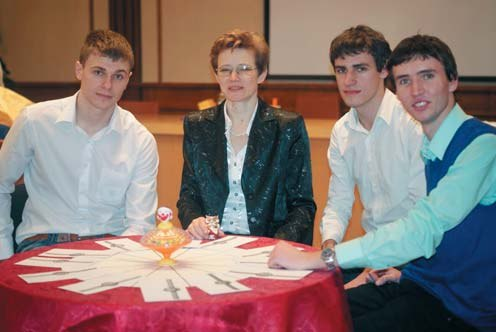
Ми дещо модернізували наш симуляційний центр. У нас уже були фантомні класи, які, чесно кажучи, не дуже функціонували за призначенням, і ми замінили фантоми на ті, з якими можна ефективно працювати. Є класи фантомів дорослих і дитячих. Придбали фантоми для місцевої анестезії і для видалення зубів. Ясна річ, вони недешеві, тож я дуже вдячна адміністрації університету за те, що було виділено кошти. Симуляційні класи були активно залучені до ОСКІ (об'єктивного структурованого клінічного іспиту) – визнаного у світі випробування студентів, яке ми запровадили одними з перших в Україні.
Фантомні класи дуже виручили нас під час карантину: коли ми не могли працювати з реальними пацієнтами, то саме ці класи зробили базою відпрацювання практичних навичок. Звичайно, фантомів ще недостатньо, потрібно обладнувати нові фантомні класи. Але якщо не починати і не намагатися чогось добитися, то надалі нічого й не буде.
Продовжуємо проведення позапрограмних лекцій і майстер-класів для студентів, запрошуємо представників різних компаній, відомих стоматологів. Спілкувалися з нашими студентами під час майстер-класів і лекцій Ярослав Заблоцький, Лариса Дахно, Денис Подільчук, Ігор Казьо, Артем Дубнов, чимало зарубіжних фахівців – з Німеччини, Італії, США, Бразилії та інших країн.
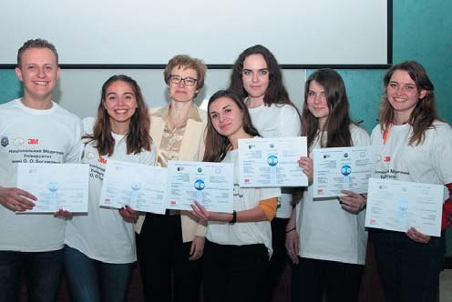
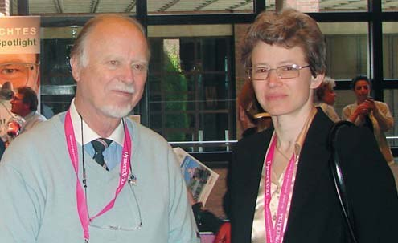
Ми відновили Дні факультету. Коли я була студенткою, у нас дуже яскраво відзначався День факультету. Потім ця традиція якось згасла. Тепер у нас не День, а Дні факультету, коли відбувається багато майстер-класів, зустрічей, студенти готують концерт. Ми організовуємо брейн-ринг зі стоматології в рамках цих Днів, хоча взагалі це змагання ми проводимо вже понад два десятиліття, і воно об'єднує студентів-стоматологів з усієї країни. Тобто це таке свято, що цікаве і студентам, і викладачам, воно дає простір для творчості студентів.
«Учитися все життя. І любити людей»
– У Вас як у декана за п'ять років має сформуватися чітке уявлення про те, яким має бути випускник Національного медичного університету за спеціальністю стоматологія…
– Спробую відповісти, хоча одним словом тут і не скажеш. Щонайперше він має бути мислячим і вмілим. Перша медична школа, якщо не помиляюся, була відкрита в італійському місті Салерно у ІХ столітті, там майбутні лікарі навчалися 9 років, і протягом перших трьох років вони вивчали лише логіку. Вони вчилися мислити. І тільки потім починали опановувати медицину і згодом – практикуватись.
І ще два важливі штрихи до образу випускника стоматологічного факультету. Він має бути готовим учитися все життя. І любити людей.
У мене колись сформулювалося таке визначення інтелігента: інтелігент – це добрий інтелектуал. Мало бути інтелектуалом – треба мати доброту в душі і готовність робити добро не заради вигоди, а тому, що ти інакше не можеш. І чимало наших випускників, якими ми пишаємося, відповідають цим принципам, оцьому баченню того, яким має бути випускник стоматологічного факультету. Сподіваюся, таких випускників буде все більше.
«Мої учителі – це також усі мої учні»
– Щоб студент став таким випускником, яким Ви його уявляєте, потрібні талановиті учителі. А хто були Ваші учителі?
– Учителька, яка сформувала мене дитячим стоматологом, моя друга мама, у професії, – професор Лариса Олександрівна Хоменко. Це надзвичайна людина, талановитий фахівець. Ми з нею пройшли дуже великий шлях. Не завжди було просто, але я бачу сьогодні, наскільки вона мене зробила професіоналом, науковцем, викладачем. Лариса Олександрівна – людина різнобічно обдарована, цікава, це цілий світ, і я дуже вдячна їй за все, що вона для мене зробила.
Звичайно, мої перші вчителі – батьки, мама Діана Андріївна і тато Василь Дмитрович, хто був зі мною, завжди підтримував, коли я росла, вчилася, підтримують і зараз. У студентські роки мене навчали талановиті викладачі – чимало з них сьогодні вже відомі професори, академіки, членкори. Мені приємно розповідати студентам, що у мене ортопедичну стоматологію викладали асистенти Валерій Петрович Неспрядько і Петро Семенович Фліс, котрі тепер – видатні професори і завідувачі кафедр, а Валерій Петрович 23 роки очолював стоматологічний факультет. Тодішній асистент Владислав Олександрович Маланчук, під керівництвом якого я виконувала свою студентську наукову роботу і, чесно кажучи, ледь не стала стоматологом-хірургом, нині – член-кореспондент Академії медичних наук України, лавреат Державної премії України. Шкода, що багато з тих, у кого я вчилась і кого безмежно поважала, відійшли у Вічність, проте кожний з них живе у моєму серці і пам'яті, а їхня наука супроводжує мене по життю.
Та коли ми говоримо про вчителів, то до них належить кожна людина, що зустрілася тобі на шляху і певною мірою торкнулася твого життя. Мої учителі – це мої колеги, друзі, а також – усі мої учні. Наші діти – це, певно, найсуворіші учителі, хоча вони цього й не усвідомлюють. Отак і кожен двієчник не уявляє, що він для мене дуже серйозний учитель, бо змушує думати і про те, як поліпшити відбір абітурієнтів, і про те, як удосконалювати навчальний процес.
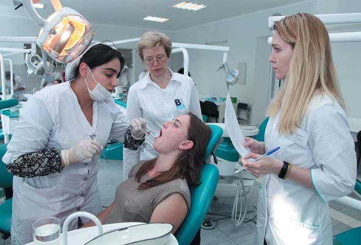
Я вдячна всім, хто зустрічався на моєму життєвому шляху. Як би не було інколи важко, чи боляче, чи некомфортно з деким із цих людей, але кожен з них чогось мене навчив.
«І в найтяжчі часи чесні й талановиті люди робили свою справу»
– Стоматологічному факультетові виповнилося 100 років. Можете розповісти, як він виник, який він нині і яким бачите його у майбутньому?
– Ще до того, як був створений факультет, фахівців зуболікарської справи готували або простим учнівством у кабінеті дантиста, або в зуболікарській школі (одна з таких шкіл, наприклад, була на Хрещатику, той будинок зберігся дотепер і певний час був базою для новоствореного факультету), або це були випускники медичного факультету Імператорського університету Святого Володимира, що додатково опанували мистецтво зуболікування. Вони навіть називалися по-різному: дантист, зубний лікар, лікар-одонтолог… Зрештою, у 1919 році з'явився одонтологічний інститут, а у 1920-ому він трансформувався в одонтологічний факультет новоствореного Інституту охорони здоров'я. Ми довго дискутували, коли правильніше святкувати 100-річчя – у 2019 чи 2020 році, і вирішили, що почнемо у 2019-ому, а у 2020-ому продовжимо.
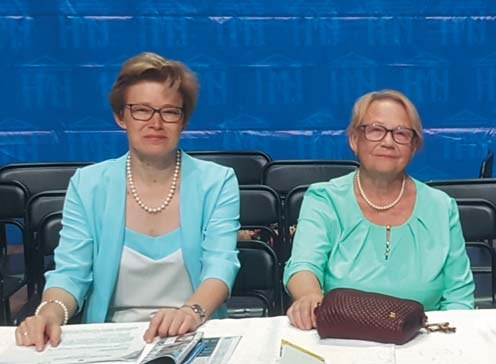
Я читала звіти декана одонтологічного факультету Костянтина Тарасова. Вони подекуди схожі на сучасні: не вистачає бормашин на всіх студентів, недостатньо пломбувальних матеріалів, дрібного інструментарію, студенти мусять усе це купувати самі… Чимало студентів відраховуються – через неуспішність, неоплату навчання, або переходять на лікувальний факультет, або помилилися у виборі фаху… Через це у 1928 і 1929 роках випусків взагалі не було. Варто згадати, що у ті часи люди, бувало, просто зникали, дехто й у чекістських катівнях чи рятуючись від них. Часи були жорстокі.
Але ті студенти, які все ж закінчували навчання майже століття тому, знали не тільки одонтологію, вони мали ґрунтовну загальнолікарську підготовку.
На зорі створення вищої одонтологічної освіти точилася запекла суперечка між ідеологом радянської стоматології Павлом Дауге, який вважав, що стоматологів треба готувати на медичних факультетах, і українськими фахівцями на чолі з харківським професором Юхимом Гофунгом, які відстоювали доцільність окремих одонтологічних факультетів з ґрунтовною загальномедичною підготовкою. Зрештою підхід українських фахівців був визнаний більш доцільним, і по всій країні почали створюватись одонтологічні факультети (які в Україні на той час уже активно діяли).
Одонтологічний факультет у Києві був першим в Україні. Тричі він був окремим інститутом – у 1919 році, з 1931 по 1940 роки, з 1945 по 1955 роки. Саме на ці роки припадали піки випуску фахівців за кількістю.
Але і в найтяжчі часи чесні й талановиті люди робили свою справу. Я в захваті від пана Тарасова, першого декана. Костянтин Прокопович походив із дуже поважаної у Києві високоінтелігентної родини, надзвичайно любив мистецтво, мешкав на Лютеранській, там часто збирався київський бомонд – літератори, музиканти, актори. Недаремно його донька Алла Тарасова стала зіркою театру і кіно. Вона протягом 57 років грала на сцені МХАТу, кілька років була навіть його директоркою, знялася у 15 фільмах і телеспектаклях (пам'ятаєте її в ролі Анни Кареніної?), її обожнювали глядачі всього Союзу. Пані Алла приїжджала до Київського медичного інституту у 1964 році, розповідала про свого батька. Дивовижна жінка: сталінські премії, депутат Верховного Совєта СРСР, а в шафі ховала ікону і була побожною та порядною людиною. Добре, що в середмісті Києва назвали вулицю її іменем.
Костянтин Тарасов був справжнім фахівцем своєї справи, мав орден Станіслава ІІІ ступеня. Одонтологічну освіту здобув уже в зрілому віці. Після навчання у фельдшерській школі починав працю в медицині у психіатричному відділенні Київського військового шпиталю, згодом закінчив зуболікарську школу. Прагнув знати і вміти ще більше, тож коли вже йому було близько 40 років, закінчив медичний факультет Імператорського Університету Святого Володимира. Під час Першої світової війни лікував поранених у щелепно-лицевому відділенні Київського військового шпиталю.
Тож іншого декана для одонтологічного факультету годі було й бажати. Вивчаючи архівні документи, я переконалася, наскільки потужно працював цей чоловік. Часи були нелегкі, але у нього все вийшло. Десять років він очолював факультет і виростив його до рівня інституту, яким він потім і став.
Фото того часу можна побачити у музеї історії нашого факультету – він поряд з деканатом. Світлини надзвичайно зворушливі. Ось фотографується група випускників 1939 року, стають на лавиці, щоб усіх було видно, попереду на кушетці лежить пацієнт, сидить професор, череп на столі лежить – такими були постановочні світлини тих часів. Ці випускники пройшли війну, були хірургами, працювали у шпиталях, хтось був в евакуації, повернулися, і знову відродився стоматологічний інститут у стінах того будинку, де нині Міністерство охорони здоров'я України.
Лікарі, які навчались у стоматологічному інституті одразу після війни, розповідали, що було дуже тяжко, не було стільців, меблів, сиділи на перекинутих відрах або працювали стоячи, по 20 студентів чекали в черзі на одну книжку, не було опалення. Але жага до знань усе переборола. І спеціалісти, яких готував стоматологічний інститут, були справжніми фахівцями своєї справи, вони залишили добрий слід і в практичній стоматології, і в науці.
Пізніше стоматологічний інститут приєднався до Київського медичного інституту, і це вже той час, який пам'ятають і наші вчителі, і моє покоління. Нам здається, що те студентське життя, яке вирувало у 1980-ті, було яскравішим, жвавішим, але ж кожне покоління має свій стиль, свої ідеали, своїх лідерів, своє щастя і свою любов. Це вічні поняття, та кожен їх розуміє і переживає по-своєму. Коли людина обирає ту справу, якій хоче присвятити життя, вона тим самим обирає і свій спосіб пізнання світу. Істина одна, шляхів до неї багато, і один із тих шляхів іде через стоматологію.
«Лікарі – це ті люди, які мають підтримувати духовний потенціал нації»
– Що скажете про перспективи для факультету на наступні 100 років?
– По-перше, слід вдосконалювати відбір абітурієнтів, про що ми з вами вже говорили. По-друге, поглиблювати і оптимізувати фундаментальну підготовку, бо на цьому фундаменті потім належно засвоюються стоматологічні дисципліни. А ще – засвоєння стоматологічних дисциплін не слід відкладати на старші курси, це по-третє. Тому ми вже на першому курсі ввели елективний курс з моделювання зубів. Я запитувала колег, які нині працюють директорами чи головними лікарями стоматологічних клінік, що ж найчастіше не вміють робити випускники стоматологічних факультетів. Відповідь була: моделювати зуб, робити препарування і моделювання реставрації так, щоб вона відповідала анатомічній формі. І коли студент уже на першому курсі починає руками відчувати цю форму, це стає добрим стартом для оволодіння практичними навичками.
А наші другокурсники вже йдуть у клініку, бо ми запровадили новий курс – введення у клінічну стоматологію. Вони приходять у стоматологічний кабінет, бачать на практиці, що таке асептика, антисептика, переходять з кафедри на кафедру. Тобто на перших курсах стоматологія не витісняє фундаментальні науки, але має бути присутньою із самого початку навчання, щоб майбутні стоматологи розуміли значення загальних дисциплін для їхньої майбутньої практики.
По-четверте, потрібно поглиблювати і загальнокультурну підготовку студентів-стоматологів. Звісно, навчити 18-річного студента якихось етичних принципів, якщо це не було закладено в родині, нелегко. Але потрібно, тому що лікарі – це ті люди, які мають підтримувати духовний потенціал нації, вони мають бути високо-культурними, високодуховними особистостями. Знову ж таки, це ідеал, але це можливо. Медицина починається з етичних принципів, і вони мають входити у плоть і кров наших студентів.
Навчальні програми факультету мають відповідати найкращим світовим зразкам, зберігаючи при цьому свою самобутність; це дасть можливість широко реалізувати академічну мобільність студентів-стоматологів.
І, ясна річ, факультет зміцнюватиме матеріальну базу, щоб студент міг оволодіти практичними навичками настільки, що ми можемо випустити його в практику навіть без інтернатури, знаючи, що він і успішно зробить оперативне втручання, і надасть швидку допомогу, і володіє прийомами мінімально інвазивної стоматології…
«Дбати і про функцію, і про естетику»
– Ви членкиня Української академії естетичної стоматології від самого її заснування. І одним із напрямків діяльності УАЕС є впровадження естетичної стоматології у навчальний процес у вищій медичній школі. Що Ви як декан думаєте про перспективи такого впровадження?
– Естетичні принципи – це те, що нерозривно пов'язане зі стоматологією, і не можна розділяти, що ось тут ми вчимо стоматологію естетичну, а тут – неестетичну.
Естетика і функція пов'язані. Це біологічні принципи існування у природі. І, до речі, в журналі «ДентАрт» мені дуже імпонує цей підхід, коли на його сторінках не лише висвітлюються питання патогенезу, методів лікування стоматологічних захворювань, а й робиться аналіз взаємозв'язку всього живого і в живому. Краса і естетика – невід'ємна частина здоров'я. Сучасні студенти це розуміють. Треба лише їх навчити, як цього принципу дотримуватися.
Як дитячий стоматолог, я дуже добре пам'ятаю період чорних тимчасових зубів, період сріблення, період «заліпух», період «цемент – наше все». Особисто через мене проходила та межа, коли я сказала собі: робимо композитні реставрації на тимчасових зубах. Це було давно, понад 20 років тому. Довелося переступити через оті забобони, що дітям композит не можна, що тимчасові зуби і так випадуть, тож нащо їх лікувати… І сьогодні я з радістю бачу багатьох дитячих стоматологів, які працюють справді по-сучасному, розуміють, що треба дбати і про функцію, і про естетику.
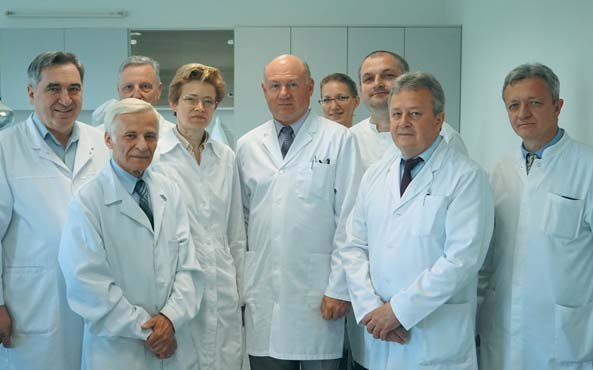
Цифрова стоматологія, що розвивається нині шалено швидко і дозволяє вдосконалювати естетичні підходи у всіх галузях, має викладатися, починаючи з першого курсу, коли студенти вивчають фізику, основи інформатики. Студенти не повинні відкладати оволодіння цими методами на майбутнє, на якісь курси, де їх навчатимуть цифрових технологій як найвищого мистецтва, а розуміти, що це інструмент, яким вони мають оволодіти в університеті. А ми повинні допомогти їм у цьому.
«Дитячий стоматолог має стати маленькому пацієнтові другом»
– Які наукові проблеми хвилюють Вас нині як професора кафедри дитячої терапевтичної стоматології та профілактики стоматологічних захворювань?
– Найперше – профілактика. З неї маємо починати, нею маємо закінчувати, і повинен бути системний підхід до профілактики стоматологічних захворювань у масштабах країни. Колись була затверджена така програма профілактики на державному рівні, і хотілося б, щоб ми мали можливість продовжити працю на цьому напрямку.
Дитяча стоматологія – це профілактика, профілактика і ще раз профілактика. Сподіваюся на успіхи в цій сфері.
Що ж до практичної дитячої стоматології, то дуже цікаво спостерігати за її розвитком – як по спіралі відбуваються зміни концепцій, зміни парадигми карієсу, підходів до лікування, як упроваджуються мінімально інвазивні технології. Деякі концепції повертаються, вдосконалюючись, деякі зникають, критикуються чи підтримуються, і тому практичною проблемою стоматології дитячого віку є пошук правильних шляхів серед усіх тих концепцій, точок зору і підходів. Іноді це складно навіть зрілому лікареві, не кажучи вже про молодого. Тому треба навчитися думати й аналізувати те, що відбувається.
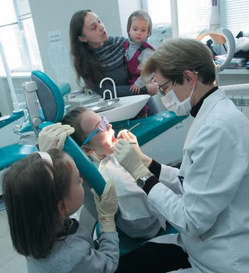
І, звичайно, не можна оминути підходи до дитини і те, що називається менеджментом поведінки у дитячій стоматології. Нині ця сфера надзвичайно розширилася. Ми говоримо вже й про елементи гіпнозу, не тільки про седацію чи загальне знеболення, говоримо про психологічні підходи, певні педагогічні навички і прийоми, якими має володіти дитячий стоматолог. Це те, що суттєво відрізняє стоматологію дитячого віку від стоматології для дорослих. Самі методики сучасного лікування, протоколи все менше відрізняються від тих, що застосовуються для дорослих, у суто технічному аспекті, з точки зору використання певних матеріалів, але контакт з дитиною, можливість працювати з нею так, щоб ви могли стати її лікарем, її другом на все життя (чи бодай до повноліття), і провадити профілактику, і запобігати проблемам – це той талант і те покликання, що їх повинен мати дитячий стоматолог. Ми закладаємо стоматологічне здоров'я на все життя. Щоб менше потім клопотів було нашим колегам. Бо дитина – це пацієнт, якого можна реально вилікувати. Діти запрограмовані на адаптацію, на зростання, загоєння…
– На саморегуляцію…
– Так, на саморегуляцію. У дорослих можна певною мірою призупинити патологічний процес, стабілізувати, затримати певний стан. А діти – класні пацієнти в тому плані, що ви справді можете досягти успішного результату, не заміщаючи щось чимось, а виліковуючи.
«Дипломи ми видавали на травиці…»
– Ви вже згадували про те, як в умовах пандемії допомогло належне оснащення фантомних класів. Чого ще навчив цей важкий для всього людства рік? І як щодо міжнародних зв'язків – ви їх обмежили чи перевели у віртуальний світ?
– Міжнародні зв'язки наразі повністю перейшли у віртуальний простір. З одного боку, це дозволило багато що побачити, почути, сконтактуватися, можливо, навіть більше, ніж вживу. Але, ясна річ, живого нормального спілкування бракує, і ми дуже сподіваємося, що воно повернеться в тому обсязі, в якому хотілося б.
Дуже важко було з тим, як забезпечити ефективний навчальний процес у медуніверситеті в умовах пандемії. Це був серйозний виклик, і я вважаю, що ми вийшли з нього з мінімальними втратами. Фантомні класи, як я вже говорила, дуже виручили. Малими групами, з усіма пересторогами, дотримуючись протиепідемічних вимог, студенти там могли відпрацьовувати навички. Тільки настає послаблення карантину – виходимо і працюємо вже з пацієнтами. Нам довелося поділити студентів на підгрупи, щоб вони працювали позмінно. У кабінеті можуть перебувати лише половина групи, один викладач, один пацієнт. Інша частина групи в той час вивчає теорію. Лекції перейшли в он-лайн режим, контрольні заходи так само.
Та як би не було важко, студенти все-таки навчилися багато чого. Державні іспити доводилося складати он-лайн. А як у цьому форматі складати іспит з роботи із пацієнтом чи на фантомах? І тут дуже потужно спрацювали всі кафедри – я щаслива, що працюю у такому працьовитому, творчому колективі однодумців, як наш стоматологічний факультет. Було згенеровано величезну кількість комплексних практичних завдань з фотографіями, результатами додаткових досліджень, з реальними пацієнтами і завданнями. Студент був поставлений в умови обмеженого часу, він мав сконцентруватися, ставити діагноз, обирати інструменти, методи. На жаль, він не міг це показати руками, але принаймні засвідчив свою можливість клінічно мислити, спираючись на те, що змогли донести йому кафедри.
Дипломи ми видавали на травиці – у прямому значенні цього слова. Щоб не було скупчення випускників і можна було дотриматися дистанції, поставили стола з документами на газоні недалеко від стоматологічного корпусу, і групи студентів підходили до нього за попередньо узгодженим розкладом. Довелося навіть уперше видавати дипломи юнакам і дівчатам у шортах, бо дехто «на травиці» вже не дотримався дрес-коду урочистої церемонії. Але вони отримали дипломи, здобули знання і навички, які дозволять їм працювати.
Нині наша найбільша турбота – про третій і четвертий курси, яким пандемія коронавірусу завадила попрацювати з пацієнтами належну кількість часу. Четвертий і п'ятий курси зараз працюють очно, третій на практичних консультаціях відпрацьовує навички на фантомах, згодом усі курси працюватимуть офлайн. Намагаємося дати нашим студентам максимум того, що дозволяють умови пандемії, і адміністрація Університету на чолі із шановним ректором Юрієм Леонідовичем Кучиним постійно дбає про це.
«Світ настільки цікавий і безмежний, що нудьгувати не доводиться»
– При такому напруженому графікові і складнощах роботи в умовах пандемії як Ви, Наталіє Василівно, боретеся зі стресами? Ви розумієте, на що я натякаю. Книжка анекдотів, які Ви зібрали, «Медики шутят» у мене в книгозбірні на чільному місці…
– Для мене це велика честь… Способів боротьби зі стресом у мене багато – подорожі (до пандемії більше, зараз менше), фотографія, музика, велосипед, гірський туризм, гірські лижі, водний, підземний туризм… А ще – Київ, він безмежний, невичерпний. Коли маю можливість і час та закінчую роботу не поночі, а завидна, то намагаюся знайомити студентів з нашим містом, показую визначні місця, пам'ятки. Ми з родиною дуже багато подорожували і подорожуємо – чи з рюкзаками за плечима, чи на автомобілі – і за кордоном, і по Україні. Україна – вона теж невичерпна!
Чим ще знімала стрес? Звичайно, гумором, що в цій книжечці! До неї увійшли смішинки, що їх я збирала, починаючи зі студентських літ. Інтерес до цього, напевно, мені прищепив мій тато, бо він змолоду колекціонує якісь гумористичні речі, веселі історії, робив вирізки з газет і журналів. Ось так якось автоматично і вийшло, що я протягом 20-ти років зібрала те, що видала у 2011 році книжкою. Уже назбиралося і на другу. На обкладинці книжки «Медики шутят» мої замальовки – у студентські літа я малювала такі моментальні картинки зі студентського життя.
А коли я вже була деканом, ми видали збірник «У пошуках довершеності», де вміщено твори студентів, випускників, викладачів стоматологічного факультету. Тут уже не йдеться про стоматологію, але в цих віршах, прозі, малюнках, світлинах з рукоділлям – світло душ моїх колег і учнів, і це класно. Це одна з моїх улюблених книг. У мене їх близько 30-ти, якщо рахувати підручники, посібники.
Світ настільки цікавий і безмежний, що нудьгувати не доводиться.
– Тобто стрес та емоційне вигоряння Вам не загрожують?
– Нудьга так точно не загрожує, а оскільки я захоплююся екстремальними видами спорту, то мої друзі жартували, коли я стала деканом, що це знову ж із любові до екстремальних ситуацій. Тому що тут їх вистачає.
– Ваші побажання колегам, зокрема й читачам журналу «ДентАрт»…
– По-перше, читайте журнал «ДентАрт», тому що його публікації доводять, що стоматологія так само безмежна, як і світ. А по-друге, завжди вчіться. Бо не лише кожен ваш пацієнт, а й усе, що відбувається у світі, усе, що ви читаєте, пізнаєте, – це сходинки вашої майстерності, навіть коли здається, що це не стосується стоматології.
А ще любіть життя. І тих, хто поруч з Вами…
– Дякую за цікаву розмову! Хай здійснюються всі Ваші плани і мрії!
– Навзаєм!
Розмовляв Сергій Радлінський
Фото з архіву Наталії Біденко
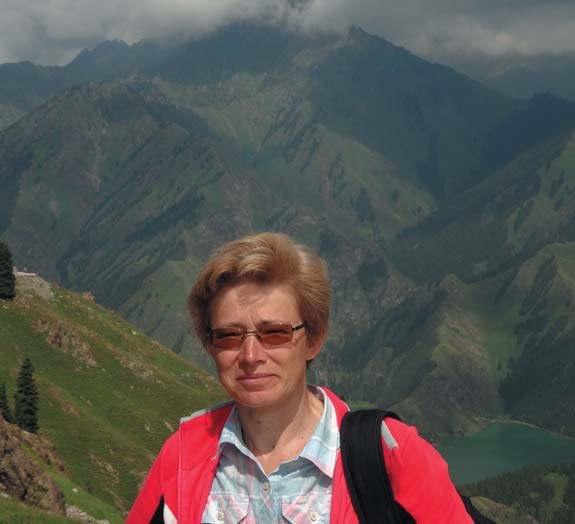
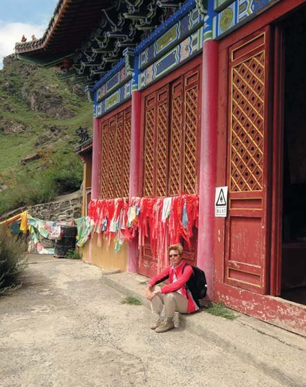
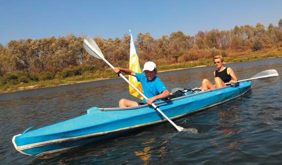
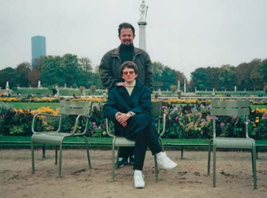
Подорожуючи, ми відкриваємо світ і усвідомлюємо свою місію в ньому…